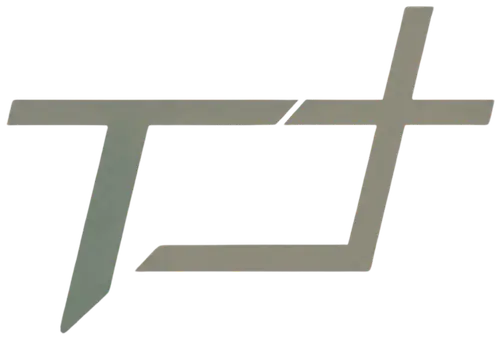
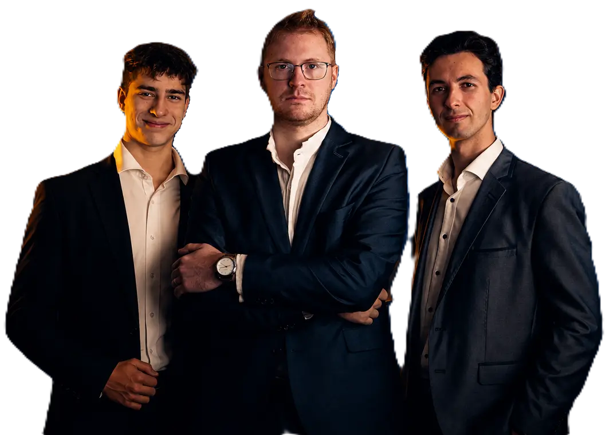
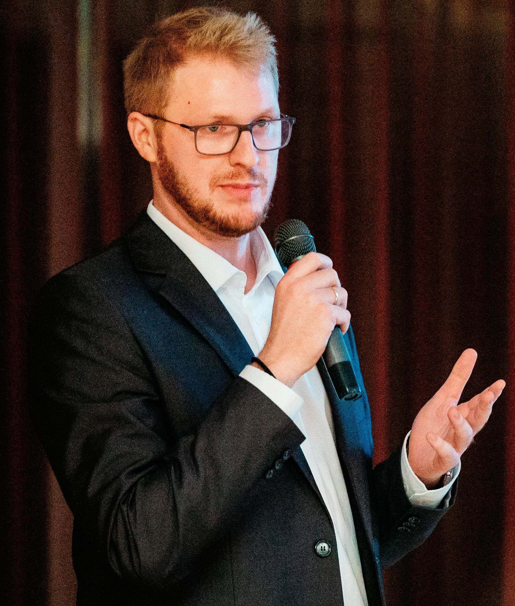
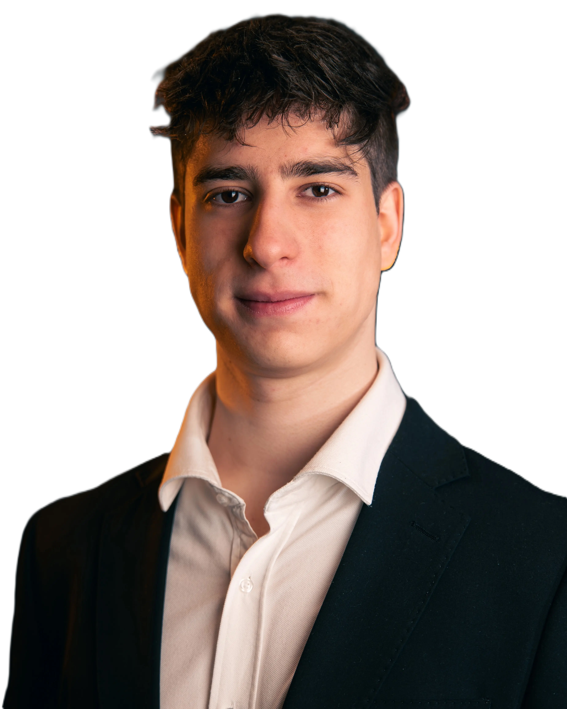
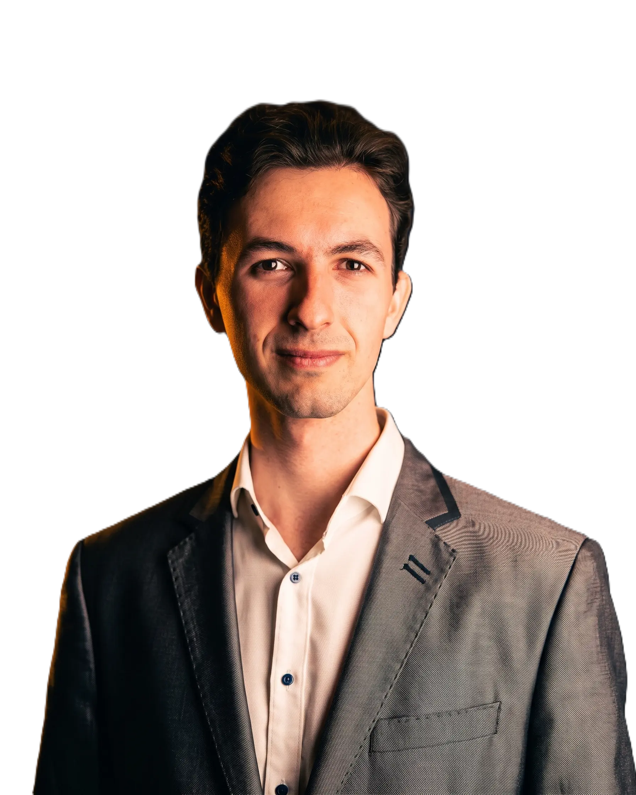

Legújabb videóink
Nézd meg a Térfél Közösség legfrissebb tartalmait közvetlenül a csatornánkról.
Videók betöltése folyamatban...

HIT. KÖZÖSSÉG. IRÁNY.
“ Ti vagytok a föld sója... Ti vagytok a világ világossága.

“ Ti vagytok a föld sója... Ti vagytok a világ világossága.
Nézd meg a Térfél Közösség legfrissebb tartalmait közvetlenül a csatornánkról.
Videók betöltése folyamatban...
Nézd meg legújabb TikTok videóinkat.
Értékformáló közösség és tanácsadó csapat fiataloknak és szülőknek.

Révész Márk - férfi, férj, apa
Több mint egy évtizede keresem és élem azt, mit jelent férfiként felelősséggel, tartással és hittel jelen lenni a világban.
Az évek során egyre inkább láttam, hogy a mai férfiak nem gyengék - csak elveszítették az irányt, amiben valaha biztosak voltak.
Ezért döntöttem úgy, hogy segítek újra megtalálni azt, mit jelent férfinak lenni, - ami nélkül nincs valódi béke sem családban, sem közösségben, sem nemzetben.
Nem vagyok pszichológus, sem coach.
Csak egy férfi, aki megjárta a maga útját - és most másokat kísérek azon az úton, hogy ők is azzá váljanak, akinek születtek.

A nevem Glasz Bulcsú. Huszonéves egyetemista vagyok. Agrár egyetemen tanulok, illetve operatőri végzettséggel és munkatapasztalattal is rendelkezem.
Tanulmányaim teljesítése mellett több "misszióban"; Istent szolgáló közösségben, együttesekben veszek részt. Nagyon fontos része az életemnek. Mint ahogy a Térfél is.
Gondviselés okozta egybeesés, hogy mi hárman együtt dolgozunk.
Naponta teszünk az ige továbbadásáért, adunk elő egyre több előadást és teszünk ki számos tartalmat felületeinkre.
A tartalomgyártás részéért én vagyok felelős, illetve az előadók között is megtalálható vagyok.
Köszönöm a Jóistennek, hogy ennek a csapatnak részese lehetek, kezdetektől fogva!

Verbay Csaba vagyok, egyetemi hallgató és középiskolai oktató.
Gazdaságinformatikai és managementi készségeimmel én látom el az előadások mögött álló szervezési feladatokat, valamint részt veszek a marketinges tevékenységekben is, ideértve egyes social media felületek kezelését.
Célom és hivatásom, hogy keresztény fiatalként megmutassam a generációmnak Isten szeretetét és a hagyományos értékek fontosságát. Ehhez igyekszem hozzájárulni tanárként is, illetve örömmel támogatok minden olyan kezdeményezést, mely segíti a fiatalokat kiigazodni az élet labirintusában.
A világ azt mondja: annyit érsz, amennyit teljesítesz. Mi azt mondjuk: azért vagy értékes, mert vagy. Beszélünk párkapcsolatokról, önbizalomról, jövőfélelmekről - és arról, hogyan találd meg a valódi, stabil önértékelésedet.
A telefonod, a pornó, a gaming, egy szokás - bármi átveheti az irányítást az életed felett, észrevétlenül. A függőség nem egyik napról a másikra alakul ki, de minden helyzetből van kiút. Megmutatjuk, hogyan ismerd fel időben a jeleket, és hogyan őrizd meg a belső szabadságodat.
„A gyermeknek nem két rajongóra van szüksége, hanem két szülőre.” Beszélünk arról, mit jelent ma férfinak lenni, miért szorult háttérbe az apák szerepe - és miért van szükség olyan férfiakra, akik vezetnek, védenek és szolgálnak.
„Ennyi lenne az élet?” - ha néha felmerül benned ez a kérdés, nem vagy egyedül, és nem hibáztál semmiben. Gyere el egy ingyenes előadásunkra, ismerj meg egy közösséget, ahol értelem, irány és értékazonos emberek várnak.